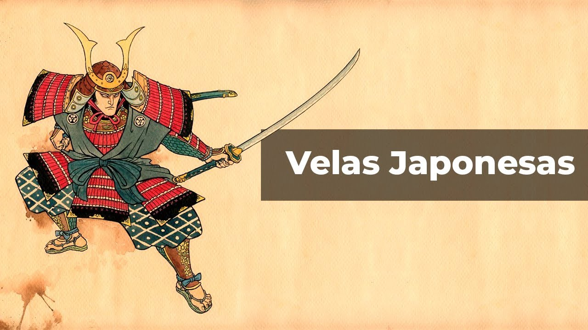
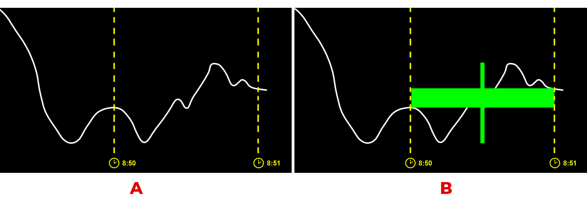
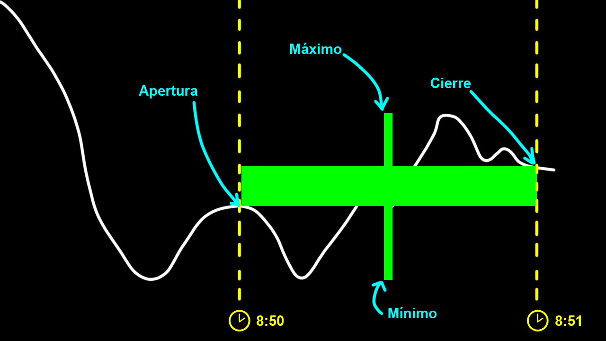
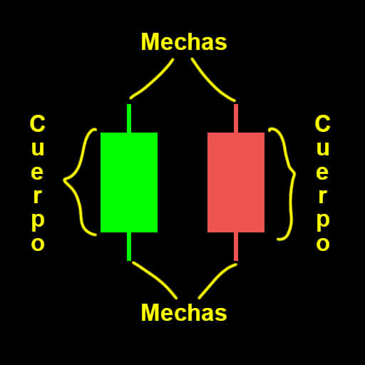
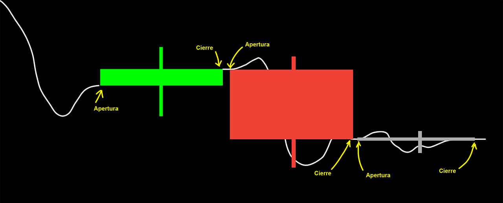
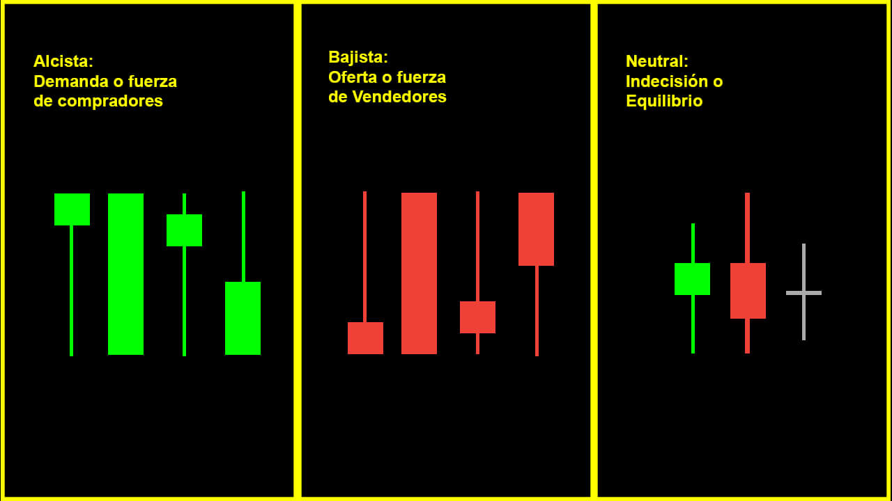
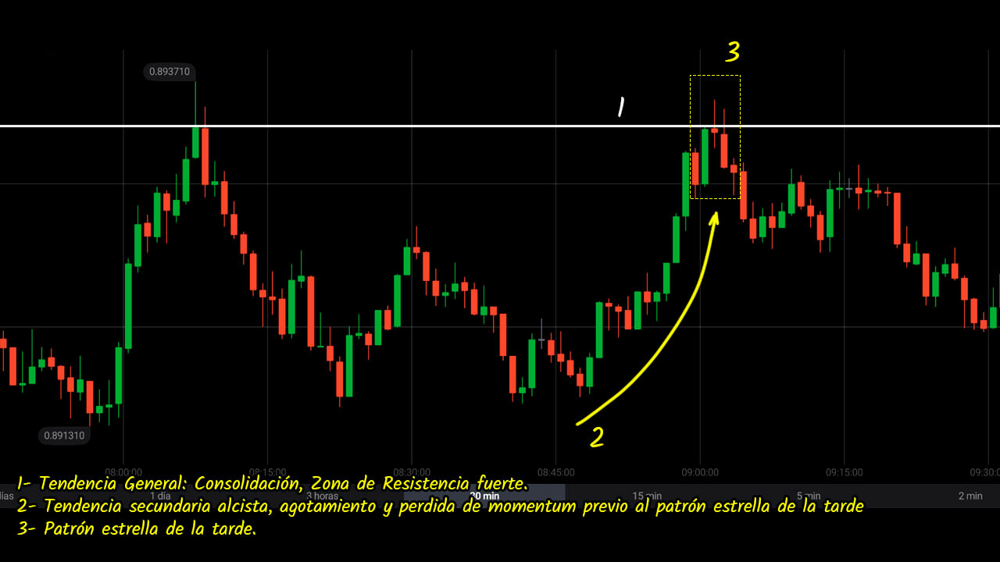

Patrones de Velas Japonesas
Una vela japonesa es la representación gráfica de la cotización del precio de un activo en determinado tiempo.

Las velas japonesas surgen en el siglo XVII a causa de la necesidad de analizar los mercados de arroz, es curioso saber que los japoneses han sido los primeros en utilizar el análisis técnico en los mercados de futuros de arroz.
Fue introducido en el occidente por Steve Nison en la década de los 90.
¿Qué es una vela japonesa?
La vela japonesa encapsula los movimientos del precio en determinado tiempo, mostrándonos más información que con los otros gráficos y de una manera más rápida.
Tomemos el siguiente ejemplo, en el lado «A» podemos observar el gráfico de líneas y cómo se ha movido desde las 8:50 hasta las 8:51. En el lado «B» podemos observar cómo la vela representa esos movimientos.

La vela japonesa está compuesta por 4 partes, apertura, Máximo, Mínimo, cierre, la siguiente imagen nos muestra las partes de la vela vista previamente

Con estas cuatro partes formamos una vela, dándonos la oportunidad de poder dividirla en 2 partes básicas, el cuerpo y las mechas.

Los colores de las velas pueden variar según el gusto del trader, en mi caso suelo utilizar uno de los colores más tradicionales, verde y rojo.
- Si el precio de cierre es por encima al de apertura entonces la vela será verde, podemos llamarle vela alcista.
- Si el precio de cierre es por debajo al de la apertura entonces la vela será roja, podemos llamarle vela bajista.
- Y si es al mismo nivel entonces será gris, podemos llamarle doji.

Las mechas nos muestran los punto más altos o más bajos a los que el precio llegó durante el tiempo de vida de la vela, dependiendo del contexto esta información nos puede mostrar la presión por parte de los compradores y vendedores.
Dependiendo de la forma de la vela y sus mechas podemos clasificaras en:
- Alcistas, demanda o fuerza de compradores.
- Bajista, oferta o fuerza de vendedores.
- Neutrales, velas de indecisión, o equilibro.

A partir de esta clasificación surgen los patrones de velas, existe una gran cantidad de patrones, y para no inventar el agua azucarada, te comparto un pdf donde podrás encontrar todos los patrones de velas con sus respectivas explicaciones y ejemplos, puedes descargarlo desde cualquiera de los siguientes enlaces:
También te comparto la página más completa de patrones de velas japonesas, esta en ingles pero si te interesan las velas entonces vale la pena revisarla, en ella encontrarás incluso información del porcentaje de fiabilidad de cada patrón. El enlace a la página es: http://thepatternsite.com/CandleVisual.html
La información que nos deja una vela depende de su cuerpo, mechas y contexto donde se dé.
Existe una gran variedad de patrones de velas, no puedo abarcar todas en una sola clase, si deseas profundizar más sobre los diferentes patrones puedes ver las siguientes clases:
Lista de reproducción Completa
- Introducción a patrones de velas japonesas
- Doji
- Doji Libélula / Doji Lápida
- Martillo
- Estrella Fugaz
- Pinbar
- Tweezer Top / Bottom
- Envolvente
- Barra Interna
- Harami
- Estrella de la mañana / Estrella de la tarde
- Marubozu
- Ventana Alcista / Bajista
- Dark Cloud Cover / Piercing Line
- Deserción Alcista / Bajista
¡CLASE BONUS!
ACTIVIDAD #5
Para nuestra siguiente actividad nos apoyaremos en el pasado del gráfico, muchos consideran buscar en el pasado del gráfico una pérdida de tiempo y quieren pasar rápidamente a operar. Y claro, tienen razón, es una perdida de tiempo cuando no sabes hacerlo.
Pero nosotros lo haremos muy bien, no basta solo con identificar el patrón, hay que identificar claramente el contexto donde lo encontramos, ¿Cómo identificar el contexto? pues eso es lo que hemos aprendido a lo largo de este curso. Bueno, este curso es una versión resumida, así que es normal que tengas muchísimas dudas, para ello te dejo para que puedas profundizar en todos los temas, esta versión corta del curso es un apoyo de introducción / repaso
Puedes compartir la siguiente actividad en el salón virtual, utiliza #Actividad5, y súbelo bajo la etiqueta “Velas”.
Instrucciones:
- Identifica 1 o 2 patrones de velas que te sean más sencillos de memorizar.
- Dibújalos / Imprimelos y anota las características de la vela y de los contextos donde debes encontrarlas, por ejemplo: tendencia perdiendo fuerza, nivel clave, mecha 2 veces más grande que el cuerpo, etc. Hazlo de una manera simple y concisa.
- Elije un par de divisas (la que normalmente operas) y busca los patrones que te has aprendido, en el pasado del gráfico.
- Asegúrate de haber encontrado el patrón de vela en un contexto adecuado. Podemos encontrar buenos patrones de velas y que han sido efectivos pero sin contextos adecuados, estos no debemos de contarlos ya que al momento de operarlos no tendremos apoyo de un contexto adecuado por lo que estaríamos entrando en operaciones con 50/50% de probabilidades de éxito.
- Comparte en el salón virtual 2 imágenes de cada uno de los patrones que hayas elegido en esta actividad para que entre toda la comunidad podamos retroalimentar.
A continuación te dejo un ejemplo:

¡Gracias por participar en la clase! Cualquier duda puedes dejarla en los comentarios o en el hilo respectivo en el salón para que puedan ser resueltas en la próxima clase de preguntas y respuestas.